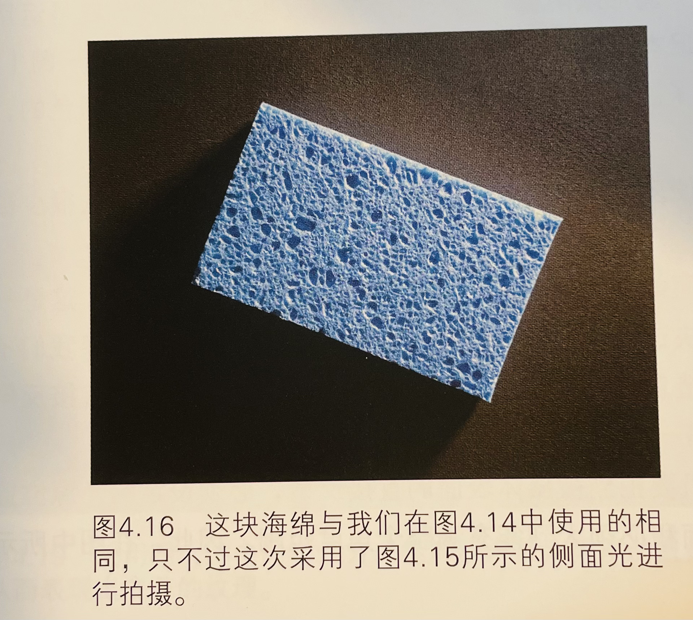
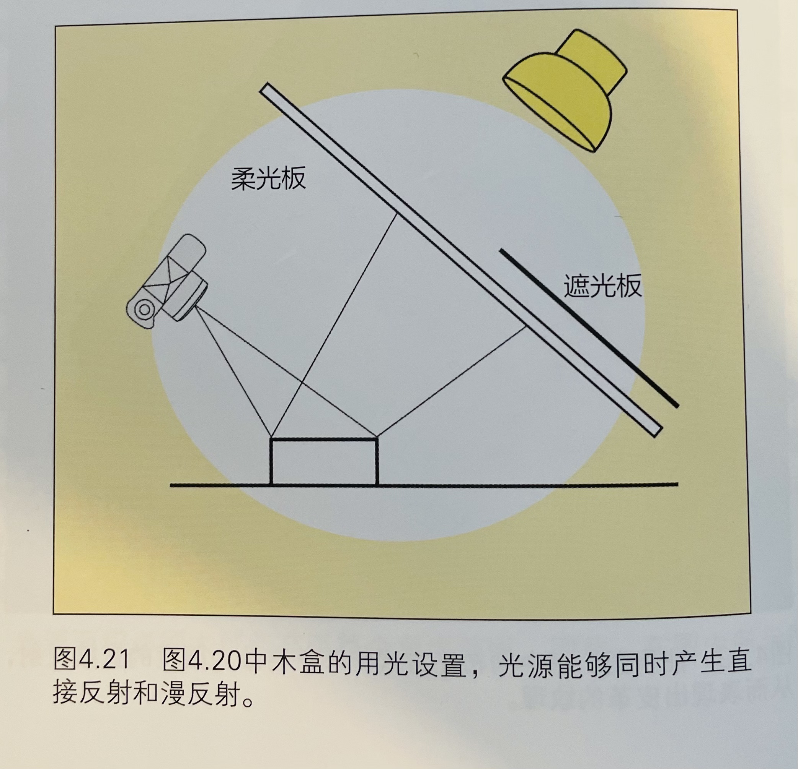

美国摄影师用光教程实录
前言
最早看到这本书是从B站的大马猫本老师那边看到的，在先前的某期视频中，推荐的一本书。立马买了这本书的实体书，看了一点点确实不错，能学到不少关于光线的知识。于是乎，随手记录一下，供日后翻阅查看。
读书笔记
第一章
- 用光是摄影的语言
- 用光的重要原理是能够遇见光线的效果
第二章
第三章
第四章 表现物体的表面
摄影师的处理工作
- 摄影用光主要对付两种极端情况：高光和阴影。高光和阴影共同表现物体的构成、外形和立体感。
- 用光的第一步是观察场景中的被摄对象，确定是何种反射造成了被摄物体的特定外形。下一步是确定光源、被摄体和照相机的位置，以便很好地利用某种反射而将其它两种反射的影响造成最低。
利用漫反射
- 漫反射能够使我们了解被摄物体的明暗程度。
- 漫反射并不能告诉我们更多有关被摄物体材质的信息
基本规则的奏效与失效
- 通常灯光放置在与原作成45度角的位置，这是一个通常能奏效的基本规则，但也不能总是奏效。能够利用的照明角度取决于照相机和被摄物体之间的距离以及所选用的镜头焦距。
光源的距离
- 小角度照明能够避免直接反射，但是如果不谨慎处理，极有可能产生不均匀的照明。入下图所示：

- 解决这个问题的唯一方法是尽可能使光源距被摄物体对象远一些。实践中，我们通常无需将光源设置太远便能获得满意的效果

克服布光难题
在光线距离与角度上，可以见的，理想的状态是在一个比较宽敞的工作室中完成，但是实际上可能并非如此：
- 我们看到的原作表面的“炫光”是直接反射和漫反射的混合体
- 镜头前的偏振镜能够消除偏振反射
- 对于难以布光的工作环境，其解决方案是将光源靠近相机光轴以取得均匀照明，同时使用偏振镜消除眩光。光源前的偏振滤光片的轴线指向相机，而镜头偏振镜的轴线应与光源偏振片的轴线垂直。
注：书中的这个事例，用了两个偏振，一个在镜头前，一个在光源。个人觉得，如果不是那么苛刻，镜头前就够了。
书中也有相应较为专业的解释如何使用光源偏振片
将光源变成偏振光会带来严重的缺陷，因此无论何时均应尽量避免使用。我们有意识地把难以布光的翻拍问题作为较为少见的案例之一，在这个案例中将光源变成偏振光是唯一可行的办法。 - 在实践中，由于偏振镜具有较深的中性密度，实际曝光损失可能会达到4-6档
- 在其它不翻拍的情况下，由于灯光可能会因为透过柔光材料而受到损失，致使问题更加严重。
- 亮度下降，光圈可能要相应的开得更大，导致无法获得足够的景深；或者曝光时间过长，导致互易率失效造成计算困难，并且照相机或被摄物体的抖动越来越难以避免。
通过漫反射和阴影表现质感
- 我们知道光照下的所有物体都会产生漫反射，并且理想的其亮度与照明角度无关。
- 小型光源以很低的角度照射被摄物体时能产生反差强烈的高光和阴影，它们对于表现中、低影调被摄体的质感时必不可少的。
- 侧光能够在纹理颗粒的一侧形成阴影，另一侧产生漫反射高光，我们就是运用这种方式来表现海绵表面的细节。
事例：



利用直接反射
在黑色皮面笔记本，利用大而柔和的直接反射，从而表现出皮革的纹理。
表现复杂的表面
- 复杂表面来描述同时需要漫反射和直接反射才能得到准确的表现的单独表面。直接反射只能够告诉观者木头表面时光滑的，而漫反射则是表现光滑表面下色彩和质感的关键因素。
打光示意图：
